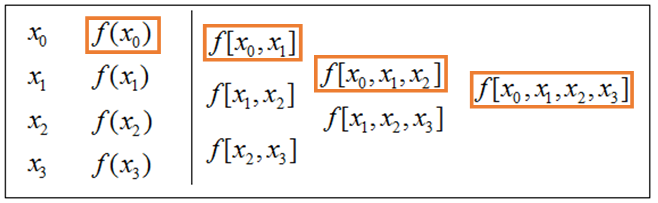
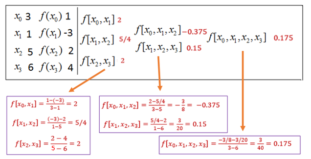
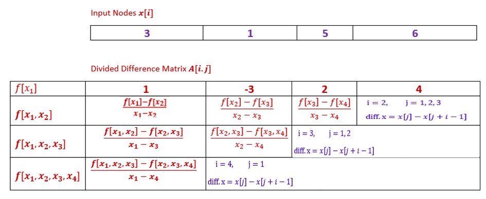
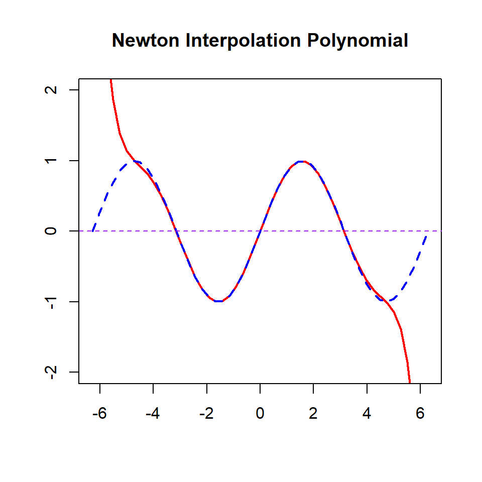
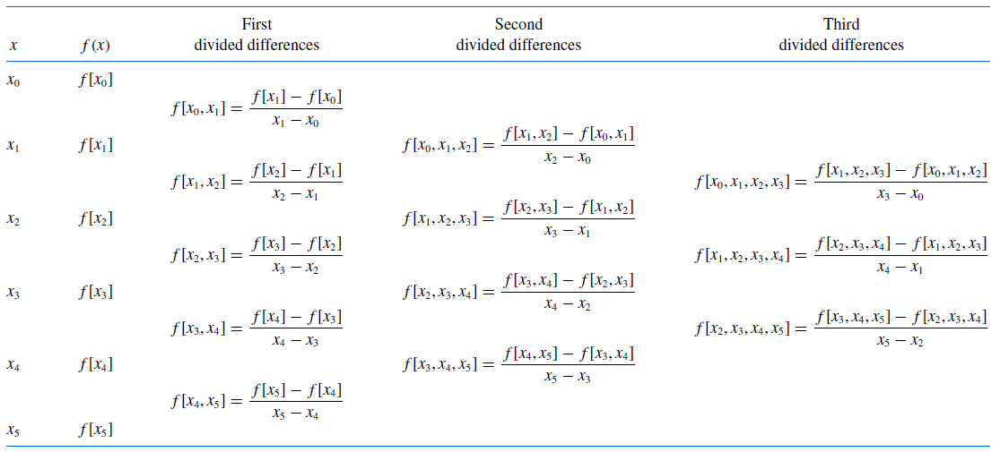

Topic 11 Newton Interpolation
Let \(f(x)\) be a function whose values are known or can be calculated at a set of points (nodes) \(\{ x_0. x_1, \cdots, x_n\}\). Assume that these points are distinct, but NOT necessarily be ordered on the real line. There exists a polynomial \(p_n(x)\) of degree at most n that interpolates \(f(x)\) at \(n+1\) nodes:
\[ p_n(x) = f(x_i), \ \ 0 \le i \le n. \]
We have discussed the Lagrange form of the interpolation polynomial. In this note, we introduce Newton’s form of interpolation polynomial.
11.1 Some Definitions
We introduce several definitions related to the divided differences and how to calculate the dived difference manually and programmatically.
11.1.1 Definitions
The Newton form basis polynomials is defined in the following
\[ \begin{array}{lcl} q_0(x) & = & a \\ q_1(x) & = & x-x_0 \\ q_2(x) & = & (x-x_0)(x-x_1) \\ \cdots & \cdots & \cdots \\ q_n(x) & = & (x-x_0)(x-x_1)\cdots(x-x_{n-1}) \end{array} \]
The \(q_0(x), q_1(x), \cdots, 1_n(x)\) is basis of span \(\{x^0, x^1, x^2, \cdots, x^n \}\).
The Newton Form Polynomial is defined as
\[
p_n(x) = \sum_{i=0}^nc_i q_i(x).
\]
Divided Differences are defined based on the coordinates of a set of given points on the curve of \(f(x)\).
| \(x\) | \(x_0\) | \(x_1\) | \(x_2\) | \(\cdots\) | \(x_n\) |
|---|---|---|---|---|---|
| \(f(x)\) | \(f(x_0)\) | \(f(x_1)\) | \(f(x_2\)) | \(\cdots\) | \(f(x_n)\) |
For \(i, j, k = 0, 1, 2, \cdots, n\),
The zero-th order divided difference is \(f[x_i] = f(x_i)\).
The second order divided difference based on distinct nodes \(x_i\) and \(x_j\) is defined as \[ f[x_i, x_j] = \frac{f(x_i) - f(x_j)}{x_i - x_j}. \]
- This is the slope of the secant line that passes the two given points on the curve of \(f(x)\).
- It is also used to approximate the derivative of the function over interval \([x_i, x_j]\) (assuming \(x_i < x_j\)) if it exists.
The third order divided difference based on the distinct nodes \(x_i < x_j < x_k\) is defined as
\[ f[x_i, x_j, x_k] = \frac{f[x_i, x_j] - f[x_j, x_k]}{x_i-x_k} \]
- The high order divided difference based on nodes \(x_0 < x_1 < \cdots < x_n\) is similarly defined as
\[ f[x_0, x_1, \cdots, x_n] = \frac{f[x_0, x_1, \cdots, x_{n-1}] - f[x_1, \cdots, x_n]}{x_0-x_n} \]
11.1.2 Calculation of Divided Difference
The Newton interpolation is defined based on the divided difference. We first look at the structure of the divided difference and then develop an algorithm to compute the divided difference programmatically.
- Iterative Nature of Divided Differences: Consider the following given points on the curve of \(f(x)\)
| \(x\) | \(x_0\) | \(x_1\) | \(x_2\) | \(x_3\) |
|---|---|---|---|---|
| \(f(x)\) | \(f(x_0)\) | \(f(x_1)\) | \(f(x_2\)) | \(f(x_3)\) |
- Three first-order divided differences are defined based on the given 4 nodes. The first one based
\[ f[x_0, x_1] = \frac{f(x_0) - f(x_1)}{x_0 - x_1}, \ \ f[x_1, x_2] = \frac{f(x_1) - f(x_2)}{x_1 - x_2}, \ \ f[x_2, x_3] = \frac{f(x_2) - f(x_3)}{x_2 - x_3}, \]
- Two second order divided differences are defined by
\[ f[x_0, x_1, x_2] = \ \frac{f[x_0, x_1] - f[x_1, x_2]}{x_0-x_2} =\frac{\frac{f(x_0) - f(x_1)}{x_0 - x_1}-\frac{f(x_1) - f(x_2)}{x_1 - x_2}}{x_0 - x_2}, \]
\[ f[x_1, x_2, x_3] = \frac{f[x_1, x_2] - f[x_2, x_3]}{x_1-x_3} = \frac{\frac{f(x_1) - f(x_2)}{x_1 - x_2}-\frac{f(x_2) - f(x_3)}{x_2 - x_3}}{x_1 - x_3} \]
- The third-order divided difference is defined by
\[ f[x_0, x_1, x_2, x_3] = \frac{f[x_0, x_1, x_2] - f[x_1, x_2, x_3]}{x_0-x_3} \]

Example 1: Calculate all divided differences based on the following given data table
| \(x\) | 3 | 1 | 5 | 6 |
|---|---|---|---|---|
| \(f(x)\) | 1 | -3 | 2 | 4 |
Based definition, the divided differences are calculated and summarized in the following table.

11.1.3 Algorithm of Calculating Divided Differences
We re-organize the above calculation in the following matrix and use the logic to develop the pseudo-code for calculating the divided differences.

Divided Algorithm
INPUT: vec.x (nodes)
vec.y (or fn() )
pred.x
OUTPUT: pn(pred.x)
STEP 1: Define a square zero matrix (array): A
STEP 2: Store vec.y in the first row of A
STEP 3: FOR i from 2 to ncol DO: (Caution: 2nd row!)
FOR j from 1 to (ncol - i + 1) DO:
denominator = vec.x[j] - vec.x[j+i-1]
numerator = A[i-1,j] - A[i-1, j+1] (using previous row of A)
A[i,j] = numerator / denominator (next order divided difference)
ENDFOR
ENDFOR
STEP 4: RETURN ADivided.Dif = function(
vec.x, # input nodes:
vec.y = NULL, # one of vec.y and fn must be given
fn = NULL,
pred.x # scalar x for predicting pn(pred.x)
){
n = length(vec.x)
if (length(vec.y) == 0) vec.y = fn(vec.x) #
node.x = vec.x
A = matrix(c(rep(0,n^2)), nrow = n, ncol = n, byrow = TRUE)
A[1,] = vec.y # fill the first row with vec.y
#
for(i in 2:(n)){
for(j in 1:(n-i+1)){
denominator = vec.x[j] - vec.x[j+1+(i-2)]
numerator = A[i-1,j]- A[i-1,j+1]
A[i,j] = numerator/denominator
}
}
A
}pander(Divided.Dif(
vec.x = c(3,1,5,6), # input nodes:
vec.y = c(1,-3,2,4), # one of vec.y and fn must be given
fn = NULL
)
)| 1 | -3 | 2 | 4 |
| 2 | 1.25 | 2 | 0 |
| -0.375 | 0.15 | 0 | 0 |
| 0.175 | 0 | 0 | 0 |
Example 2: (Example 1 of Burden and Faires’ textbook, 9th edition, page 127) Complete the divided difference table for the following data.
| x | y |
|---|---|
| 1.0 1.3 1.6 1.9 2.2 | 0.7651977 0.6200860 0.4554022 0.2818186 0.1103623 |
We use the above function to calculate the divided differences.
pander(Divided.Dif(
vec.x = c(1, 1.3, 1.6, 1.9, 2.2),
vec.y = c(0.7651977, 0.6200860, 0.4554022, 0.2818186, 0.1103623),
fn = NULL
)
)| 0.7652 | 0.6201 | 0.4554 | 0.2818 | 0.1104 |
| -0.4837 | -0.5489 | -0.5786 | -0.5715 | 0 |
| -0.1087 | -0.04944 | 0.01182 | 0 | 0 |
| 0.06588 | 0.06807 | 0 | 0 | 0 |
| 0.001825 | 0 | 0 | 0 | 0 |
The resulting table is the same as the one obtained in the table of the textbook (except for rounding errors).
11.2 Newton Interpolation Polynomial
From the definition of the divided difference, for any \(x\) and \(x_0\), we have
\[ f[x,x_0] = \frac{f(x)-f(x_0)}{x-x_0} \]
Solving for \(f(x)\), we have
\[ f(x) = f(x_0) + f[x, x_0](x - x_0). \]
Similarly, for \(x_0\) and \(x_1\), the second order divided difference is given by
\[ f[x,x_0, x_1] = \frac{f[x, x_0]-f[x_0,x_1]}{x-x_1} \]
Therefore,
\[ f[x,x_0] = f[x_0,x_1] + f[x, x_0, x_1](x - x_1). \] That is,
\[ f(x) = f[x_0] + f[x_0, x_1](x - x_0) + f[x, x_0, x_1](x - x_0)(x - x_1). \]
Repeating the above calculation, we have
\[ f(x) = f[x_0] + f[x_0, x_1](x-x_0) + f[x_0, x_1, x_2](x-x_0)(x-x_1) + \cdots + f[x, x_0, \cdots, x_n](x-x_0)\cdots(x-x_{n-1}) \]
11.2.1 Definition of Newton Interpolation
Based on the above derivation, we define Newton Form Interpolation Polynomial to be of the following form
\[ N_n(x) = f[x_0] + f[x_0, x_1](x-x_0) + f[x_0, x_1, x_2](x-x_0)(x-x_1) + \cdots + f[x_0, \cdots, x_n](x-x_0)\cdots(x-x_{n-1}) \]
We can see that \(N_n(x)\) passes all interpolating points:
\[ N_n(x_0) = f(x_0) \]
\[ N_n(x_1) = f(x_0) + f[x_0, x_1](x_1-x_0) = f(x_0) + \frac{f(x_1)-f(x_0)}{x_1-x_0}(x_1-x_0) = f(x_1) \] In general,
\[ N_n(x_k) = f(x_k), \ \ \text{ for } \ \ 0 \le k \le n. \]
11.2.2 Newton Interpolation Algorithm
The associated divided differences in the above Newton Interpolation Polynomial are returned in the first column of the function Divided.Dif(). To write the algorithmic function
Newton Interpolation Algorithm 2
INPUT: vec.x
vec.y or fn
pred.x (for prediction)
OUTPUT: pred.y (pn(pred.x))
STEP 1: initialization:
Divided.Dif (function call)
Pn = 0
STEP 2: FOR i from 1 to n DO:
cumProd = 1 (initial value for the cumulative product)
FOR j from 1 to i DO:
cumProd = cumProd*(pred.x-vec.x[j])
ENDFOR
Pn = Pn + Divided.Dif[i]*cumProd
ENDFOR
STEP 3: RETURN(Pn)
Next, we write an R function to implement the Newton interpolation polynomial.
NewtonInterpolation = function( vec.x, # input interpolation nodes
vec.y = NULL,
fn = NULL, # either vec.y or fn must be provided
pred.x # single value of x for prediction
){
if(length(vec.y) ==0) vec.y = fn(vec.x)
DivDif = Divided.Dif(vec.x, vec.y)[,1] # the values in the first column of the div dif matrix
n = length(vec.x)
Nn = vec.y[1] # f[xo]
for (i in 1:(n-1)){ # Must be n - 1 according to the last term in the polynomial
cumProd = 1 # initial value to calculate the cumulative product
for(j in 1:i){ # forward difference formula
cumProd = cumProd*(pred.x-vec.x[j]) # updating the cumulative product in the inner loop
}
Nn = Nn + DivDif[i+1]*cumProd # adding high order terms alliteratively to the Nn(x)
}
Nn # return the value of the Newton polynomial
}Example 3 (Continuation of example 2). We evaluate the Newton interpolation polynomial \(p_4(x)\) at \(x = 1.1, 1.6\) and \(2.0\), respectively. Recall the given data points are
| x | y |
|---|---|
| 1.0 1.3 1.6 1.9 2.2 | 0.7651977 0.6200860 0.4554022 0.2818186 0.1103623 |
Solution: We use the above R function to evaluate the function at the two given nodes.
pred.1.6 = NewtonInterpolation(vec.x = c(1, 1.3, 1.6, 1.9, 2.2),
vec.y = c(0.7651977, 0.6200860, 0.4554022, 0.2818186, 0.1103623),
pred.x = 1.6)
pred.1.1 = NewtonInterpolation(vec.x = c(1, 1.3, 1.6, 1.9, 2.2),
vec.y = c(0.7651977, 0.6200860, 0.4554022, 0.2818186, 0.1103623),
pred.x = 1.1)
pred.2.0 = NewtonInterpolation(vec.x = c(1, 1.3, 1.6, 1.9, 2.2),
vec.y = c(0.7651977, 0.6200860, 0.4554022, 0.2818186, 0.1103623),
pred.x = 2.0)
pander(cbind(pred.1.6=pred.1.6, pred.1.1=pred.1.1, pred.2.0 = pred.2.0))| pred.1.6 | pred.1.1 | pred.2.0 |
|---|---|---|
| 0.4554 | 0.7196 | 0.2239 |
The results are the same as those obtained in the textbook Burden and Faires (9th edition, page 131).
R Function: Vector Enabled Newton Interpolated Polynomial
Next, we modify the previous R function to take a vector of input x-values for prediction just like other R functions.
##################################################################################
## Newton Interpolated Polynomial Approximation: vector-enabled input
##################################################################################
Newton.Interpolation = function( vec.x, # input interpolation nodes
vec.y = NULL,
fn = NULL, # either vec.y or fn must be provided
pred.x # VECTOR INPUT!!!
){
if(length(vec.y) ==0) vec.y = fn(vec.x)
DivDif = Divided.Dif(vec.x, vec.y)[,1] # the values in the first column of the div dif matrix
n = length(vec.x)
############
m = length(pred.x)
NV = rep(0, m) # values of Nn(pred.x)
for(k in 1:m) {
################
Nn = vec.y[1] # f[xo]
for (i in 1:(n-1)){ # Must be n - 1 according to the last term in the polynomial
cumProd = 1 # initial value to calculate the cumulative product
for(j in 1:i){ # forward difference formula
cumProd = cumProd*(pred.x[k]-vec.x[j]) # updating the cumulative product in the inner loop
}
Nn = Nn + DivDif[i+1]*cumProd # adding high order terms alliteratively to the Nn(x)
}
NV[k] = Nn # return the value the Newton polynomial
}
NV
}pred.x = c(1.6, 1.1, 2.0) # pred.x is the argument is a local variable!
pred.NIP = Newton.Interpolation(vec.x = c(1, 1.3, 1.6, 1.9, 2.2),
vec.y = c(0.7651977, 0.6200860, 0.4554022, 0.2818186, 0.1103623),
pred.x = c(1.6, 1.1, 2.0))
pander(cbind(pred.x = pred.x, pred.NIP=pred.NIP))| pred.x | pred.NIP |
|---|---|
| 1.6 | 0.4554 |
| 1.1 | 0.7196 |
| 2 | 0.2239 |
11.3 Error Analysis
Using the generalized Rolle theorem repeatedly on the expression of the divided difference, have the following result.
Theorem: Let \(x_0, \cdots , x_{n-1}\), \(x\) be \(n+1\) distinct points. Let \(a = \min (x_0, \cdots , x_{n-1}, x)\) and \(b = \max(x_0, \cdots , x_{n-1},x)\). Assume that \(f(x)\) has a continuous derivative of order \(n\) in the interval \((a, b)\). Then
\[ f[x_0, x_1, \cdots, x_{n-1}, x] = \frac{f^{(n)}(\xi)}{n!} \]
where \(\xi \in (a, b)\).
Proof: Let \(P_{n+1}(y)\) be the interpolated polynomial at \(y\) for given nodes \(\{ x_0, x_1, x_2, \cdots, x_{n-1},x \}\) such that \(P_{n+1}(x_i) = f(x_i)\) for \(i = 0, 1, 2, \cdots, n-1\), and \(P_{n+1}(x) = f(x)\). From the construction of Newton interpolating polynomial \(P_n(x)\), we know that \[ P_n(y) = P_{n-1}(x) + f[x_0, x_1, x_2, \cdots, x_{n-1},x] (x-x_0)\cdots(x-x_{n-1}) \] Apparently,
\[ f(x) =P_n(x) = P_{n-1}(x) + f[x0, x1, x2, \cdots, x_{n-1},x] (x-x_0)\cdots(x-x_{n-1}) \] Using the theorem introduced in the last unit and the uniqueness of the app, we have
\[ f(x) = P_{n-1}(x) + \frac{f^{(n)}(\xi)}{n!}(x-x_0)(x-x_1)\cdots(x-x_{n-1}). \]
Using the same arguments in the Lagrange interpolation polynomial, we can establish the error bound for the Newton form interpolation polynomials.
11.4 Some Remarks of Newton Interpolation
First of all, both Lagrange and Newton interpolation polynomials introduced earlier can be viewed as a linear combination of basis polynomials \(\{x^0, x^1, x^2, x^2, \cdots, x^n \}\). In fact, Lagrange and Newton interpolation polynomials are two different algebraic representations of the same polynomial.
That is, \(P_n(x)\) and \(N_n(x)\) be Lagrange and Newton interpolation polynomials based on \((x_0, y_0), (x_1, y_1), (x_2, y_2), \cdots, (x_n, y_n)\). We express both \(P_n(x)\) and \(N_n(x)\) in terms of basis polynomials \(\{x^0, x^1, x^2, x^2, \cdots, x^n \}\) as
\[ P_n(x) = a_0 + a_1x + a_2x^2 + \cdots + a_nx^n \ \ \text{ and } \ \ N_n(x) = b_0 + b_1x + b_2x^2 + \cdots + b_nx^n \] Since \(P_n(x_i) = y_i = N_n(x_i)\) for \(i = x_0, x_1, \cdots, x_n\), we can easily show that \(a_j = b_j\) for \(j = 0, 1, 2, \cdots, n\). Therefore, the error bounds of both Lagrange and Newton interpolation polynomials are the same.
For the Newton form interpolation polynomial, we only need to add more terms if additional interpolation nodes are added to the existing ones. Since the divided differences are independent of the newly added nodes. But for the Lagrange form, we need to restart the program. This is a unique feature of the Newton interpolation polynomial.
Example 4. Use the Newton Interpolation polynomial to approximate \(f(x) = \sin(x)\) with interpolating nodes \(x = -\pi, -0.75\pi, -0.5\pi, 0.25\pi, 0, 0.25\pi, 0.5\pi, 0.75\pi, \pi\).
Solution: We plot both \(f(x) = \sin(x)\) and \(N_8(x)\) over interval \([-2\pi, 2\pi]\) and see the performance of the approximation.
nodes = c(-1.5*pi, -pi, -0.5*pi, -0.25*pi, 0, 0.25*pi, 0.5*pi, pi, 1.5*pi)
####
xx = seq(-2*pi, 2*pi, length = 50)
yy = sin(xx)
Nn = Newton.Interpolation(vec.x = nodes,
vec.y = sin(nodes),
pred.x = xx)
plot(xx, Nn, xlab = "", ylab = "", type = "l", lwd = 2, col = "red", ylim = c(-2,2),
main = "Newton Interpolation Polynomial")
lines(xx, yy, lty =2, col = "blue", lwd = 2)
abline(h = 0, lty = 2, col = "purple")
11.5 Implicit Loops in R Programming
This lab note introduces how to reduce loops through vectorization. For any vectorized language, there are different extensions such as user-defined functions and routines to carry vectorized operation instead of element-wise operation. Most R functions are vectorized. We will use some examples to illustrate how a loop can be avoided if vectorization is available.
11.5.1 Implicit in R Primitive Functions
R was written in C. It has a long list of primitive functions written in C. Most of these functions are vectorized. Calling an internal vectorized function is the same as performing an implicit loop.
Example 1: Consider the sum of two matrices with the same dimension. Define
\[ A = \begin{pmatrix} 1 & 2 & 3\\ 3 & 7 & 9 \end{pmatrix} \]
and
\[ B = \begin{pmatrix} 5 & 2 & 7\\ 4 & 1 & 6 \end{pmatrix} \]
We find the sum of \(A\) and \(B\)
\[ A + B = \begin{pmatrix} 6 & 4 & 10\\ 7 & 8 & 15 \end{pmatrix} \]
Method 1: Using explicit loops. Since the sum of compatible matrices is an element-wise operation, in order to access individual elements, we need to use two indexes - one for the row and one for the column. We use the double loops to calculate the sum of two matrices in the following code.
loopSum = function(A,B){
sumAB = matrix(0, nrow = dim(A)[1], ncol = dim(A)[2])
for(i in 1:dim(A)[1]) {
for (j in 1:dim(A)[2]){
sumAB[i,j] = A[i,j] + B[i,j]
}
}
sumAB
}We can also use R primitive function + to perform the matrix summation.
A = matrix(c(1,2,3,3,7,9), ncol = 3, byrow = TRUE)
B = matrix(c(5,2,7,4,1,6), ncol = 3, byrow = TRUE)## [,1] [,2] [,3]
## [1,] 6 4 10
## [2,] 7 8 15## Time difference of 0.01857495 secs## [,1] [,2] [,3]
## [1,] 6 4 10
## [2,] 7 8 15## Time difference of 0.007112026 secsExample 2: Summation of large matrices.
## Time difference of 1.088036 secs## Time difference of 0.1479499 secsThe obvious benefits of using an implicit vectorized primitive function to perform matrix operation:
The code is simple.
It is faster.
11.5.2 Some Vectorized Primitive Functions
Since the numerator and denominator are defined as the difference between adjacent terms. We can vectorize these differences using the R function diff() that computes the difference between pairs of consecutive elements of a numeric vector.
Example 2: Consider vec.x = (1, 1.3, 1.6, 1.9, 2.2) and vec.y = (0.7651977, 0.6200860, 0.4554022, 0.2818186, 0.1103623). We use the diff() to calculate the divided differences in the following table step by step.
The following are manual steps for calculating the divided differences in the above table.
- Step 1: zero-th order divided differences (\(i = 1\))
- Step 2: The first order divided differences (i = 2)
i=2
## divided difference
i2.y = diff(vec.y)
i2.x = vec.x[-(1:(i-1))] - vec.x[-((n+2-i):n)]
i2.divDif = i2.y/i2.x
cbind(i2.y = i2.y, i2.x = i2.x, i2.divDif = i2.divDif)## i2.y i2.x i2.divDif
## [1,] -4 -2 2.00
## [2,] 5 4 1.25
## [3,] 2 1 2.00- Step 3: The first order divided differences (i = 3)
i = 3
i3.y = diff(i2.divDif) # Caution
i3.x = vec.x[-(1:(i-1))] - vec.x[-((n+2-i):n)]
i3.divDif = i3.y/i3.x
cbind(i3.y = i3.y, i3.x = i3.x, i3.divDif = i3.divDif)## i3.y i3.x i3.divDif
## [1,] -0.75 2 -0.375
## [2,] 0.75 5 0.150- Step 4: The first order divided differences (i = 4)
i = 4
i4.y = diff(i3.divDif)
i4.x = vec.x[-(1:(i-1))] - vec.x[-((n+2-4):n)]
i4.divDif = i4.y/i4.x
cbind(i4.y = i4.y, i4.x = i4.x, i4.divDif = i4.divDif)## i4.y i4.x i4.divDif
## [1,] 0.525 3 0.17511.5.3 Divided Difference Variants
Recall the definitions of the divided difference in the Newton form interpolation.
\[ N_n(x) = f[x_0] + f[x_0, x_1](x-x_0) + f[x_0, x_1, x_2](x-x_0)(x-x_1) + \cdots + f[x_0, \cdots, x_n](x-x_0)\cdots(x-x_{n-1}) \]

NewtonInterp = function(xvec,
yvec = NULL,
fn = NULL,
pred.x
){
if(length(yvec)==0) yvec = fn(xvec)
n=length(xvec)
DivDiff = rep(0,n) # zero vector to store divided differences
NewtonBasis = rep(0,1) # zero vector to store Newton form basis polynomial
DivDiff[1]=yvec[1] # 1st order divided difference loaded to the first
NewtonBasis[1]=1 # zero-degree basis polynomial
old.NewtonBasis = 1 # initialize Newton basis polynomial for updating newer basis
##
for (i in 2:n){
NewtonBasis[i] = old.NewtonBasis*(pred.x-xvec[i-1]) # updating Basis polynomial
dfx = xvec[-(1:(i-1))] - xvec[-((n-(i-2)):n)] # denominator in the divided difference
dy = diff(yvec) # difference of lower order divided difference for the numerator
##
DivForm = dy/dfx # new vector of divided differences
DivDiff[i]=DivForm[1] # pick the top one store in the vector of DivDiff
yvec = DivForm # updating for operation in the next row
old.NewtonBasis = NewtonBasis[i] # updating Newton basis polynomial
}
Nx=sum(DivDiff*NewtonBasis) # predicted y value of the given pred.x
list(Pred.y = Nx, DividedDifference = DivDiff, NewtonBasis = NewtonBasis)
}Example 3: Reproduce the result in the above illustrative table.
vec.x = c(3,1,5,6)
vec.y = c(1,-3,2,4)
example1 = NewtonInterp(yvec = vec.y, xvec = vec.x, pred.x = 5)
example1## $Pred.y
## [1] 2
##
## $DividedDifference
## [1] 1.000 2.000 -0.375 0.175
##
## $NewtonBasis
## [1] 1 2 8 0## [1] 2Example 5: Reproduce Example 1 of Burden and Faires’ textbook, 9th edition, page 127) Complete the divided difference table for the following data.
| x | y |
|---|---|
| 1.0 1.3 1.6 1.9 2.2 | 0.7651977 0.6200860 0.4554022 0.2818186 0.1103623 |
vec.x = c(1, 1.3, 1.6, 1.9, 2.2)
vec.y = c(0.7651977, 0.6200860, 0.4554022, 0.2818186, 0.1103623)
example2 = NewtonInterp(yvec = vec.y, xvec = vec.x, pred.x = 1)
example2## $Pred.y
## [1] 0.7651977
##
## $DividedDifference
## [1] 0.765197700 -0.483705667 -0.108733889 0.065878395 0.001825103
##
## $NewtonBasis
## [1] 1 0 0 0 0## [1] 0.765197711.5.4 Vectorizing NewtonInterp()
Next, we vectorize the above R function for Newton interpolation polynomial so that it can take a vector input. We will also compare this new function with the two R functions created in the lecture note.
Vectorizing.Newton = function(xvec,
yvec = NULL,
fn = NULL,
pred.x # numerical vector or scalar input
){
if(length(yvec) == 0) yvec = fn(xvec)
n = length(xvec)
m = length(pred.x) # dimension of the input vector for prediction
NewtonPolynomial = rep(0, m) # predicted value of the Newton interpolation polynomial
for (k in 1:m){
yvec0 = yvec # CAUTION: Must be REINSTATED! diff(yvec) will change its original values!!
DivDiff = rep(0,n) # zero vector to store divided differences
NewtonBasis = rep(0,1) # zero vector to store Newton form basis polynomial
DivDiff[1] = yvec[1] # 1st order divided difference loaded to the first
NewtonBasis[1] = 1 # zero-degree basis polynomial
old.NewtonBasis = 1 # initialize Newton basis polynomial for updating the newer basis
##
for (i in 2:n){
NewtonBasis[i] = old.NewtonBasis*(pred.x[k]-xvec[i-1]) # updating basis polynomial
dfx = xvec[-(1:(i-1))] - xvec[-((n-(i-2)):n)] # denominator in the divided difference
dy = diff(yvec0) # difference of lower order divided difference for the numerator
DivForm = dy/dfx # new vector of divided differences
#cat("\n\n Inner loop:",i,". dfx =",dfx, ". dy =", dy, ". ")
DivDiff[i] = DivForm[1] # pick 1st component to store in vector DivDiff
yvec0 = DivForm # updating for operation in the next row
old.NewtonBasis = NewtonBasis[i]
}
NewtonPolynomial[k] = sum(DivDiff*NewtonBasis)
#cat("\n\n",k,"-th Pred.y:",NewtonPolynomial,", Diff:", DivDiff, ", Basis:", NewtonBasis,".")
}
NewtonPolynomial
}vec.x = c(1, 1.3, 1.6, 1.9, 2.2)
vec.y = c(0.7651977, 0.6200860, 0.4554022, 0.2818186, 0.1103623)
Vectorizing.Newton(yvec = vec.y, xvec = vec.x, pred.x = c(1, 2))## [1] 0.7651977 0.223875411.5.5 Code Efficiency with Implivit Loops
For comparison, we copy the two functions in the lecture note.
Divided.Dif = function(
vec.x, # input nodes:
vec.y = NULL, # one of vec.y and fn must be given
fn = NULL,
pred.x # scalar x for predicting pn(pred.x)
){
n = length(vec.x)
if (length(vec.y) == 0) vec.y = fn(vec.x) #
node.x = vec.x
A = matrix(c(rep(0,n^2)), nrow = n, ncol = n, byrow = TRUE)
A[1,] = vec.y # fill the first row with vec.y
#
for(i in 2:(n)){
for(j in 1:(n-i+1)){
denominator = vec.x[j] - vec.x[j+1+(i-2)]
numerator = A[i-1,j]- A[i-1,j+1]
A[i,j] = numerator/denominator
}
}
A
}##################################################################################
## Newton Interpolated Polynomial Approximation: vector-enabled input
##################################################################################
Looping.Newton = function( vec.x, # input interpolation nodes
vec.y = NULL,
fn = NULL, # either vec.y or fn must be provided
pred.x # VECTOR INPUT!!!
){
if(length(vec.y) ==0) vec.y = fn(vec.x)
DivDif = Divided.Dif(vec.x, vec.y)[,1] # the values in the first column of the div dif matrix
n = length(vec.x)
############
m = length(pred.x)
NV = rep(0, m) # values of Nn(pred.x)
for(k in 1:m) {
################
Nn = vec.y[1] # f[xo]
for (i in 1:(n-1)){ # Must be n - 1 according to the last term in the polynomial
cumProd = 1 # initial value to calculate the cumulative product
for(j in 1:i){ # forward difference formula
cumProd = cumProd*(pred.x[k]-vec.x[j]) # updating the cumulative product in the inner loop
}
Nn = Nn + DivDif[i+1]*cumProd # adding high order terms alliteratively to the Nn(x)
}
NV[k] = Nn # return the value the Newton polynomial
}
NV
}The following code shows the computational time the above two functions take in the approximation.
start <- Sys.time()
pred.x = c(1.6, 1.1, 2.0) # pred.x is the argument is a local variable!
pred.NIP0 = Vectorizing.Newton(xvec = c(1, 1.3, 1.6, 1.9, 2.2),
yvec = c(0.7651977, 0.6200860, 0.4554022, 0.2818186, 0.1103623),
pred.x = c(1.6, 1.1, 2.0))
pander(cbind(pred.x = pred.x, pred.NIP=pred.NIP0))| pred.x | pred.NIP |
|---|---|
| 1.6 | 0.4554 |
| 1.1 | 0.7196 |
| 2 | 0.2239 |
## Time difference of 0.01446509 secsstart <- Sys.time()
pred.x = c(1.6, 1.1, 2.0) # pred.x is the argument is a local variable!
pred.NIP = Looping.Newton(vec.x = c(1, 1.3, 1.6, 1.9, 2.2),
vec.y = c(0.7651977, 0.6200860, 0.4554022, 0.2818186, 0.1103623),
pred.x = c(1.6, 1.1, 2.0))
pander(cbind(pred.x = pred.x, pred.NIP=pred.NIP))| pred.x | pred.NIP |
|---|---|
| 1.6 | 0.4554 |
| 1.1 | 0.7196 |
| 2 | 0.2239 |
## Time difference of 0.0286901 secs